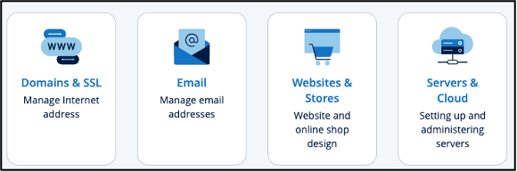
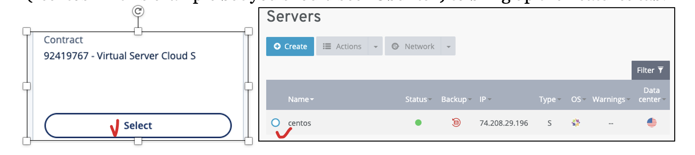
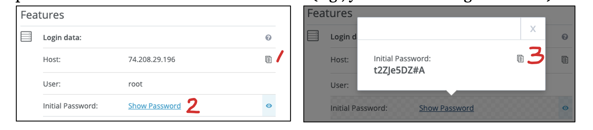

Obtaining VM IP Address and Root Password
Assignment Instruction
This instruction shows you how to access your remote VM server information so you can use it to access the server from your local computer.
Objective: 1. Obtaining the VM IP address from the hosting company website VPS. 2. Obtaining the VM root user account password from the VPS.
Getting Started
Follow these steps to obtain your VM IP address and root password:
Log in and Select Servers:
Log into https://ionos.com/ and you will be redirected to the product page (https://my.ionos.com/product-overview). Click on the Servers & Cloud tile.
Select the Contract:
Select your VPS to go to the administration page; then select your server name (“centos” in this example but you should see “Ubuntu”) to bring up the Features tab.
Copy the Host IP Address and Root User Password:
From the Features tab, copy (using the Copy icon) your 1) VM Host IP (Internet Protocol) address and 2) the Initial Password of the “root” user account. Keep the IP and password somewhere secure and accessible (e.g., your Canvas Assignment a00).

{kind=link}
{kind=link}
{kind=link}